← All workProject 01 / 15
Architectural visualisation of a retail park in the desert
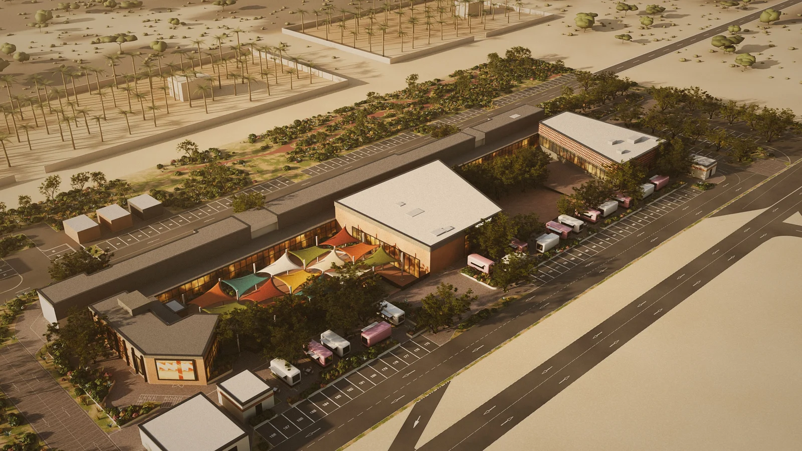
4K stills of Retail Park in Al Dhaid, Sharjah: modelled in Blender from the drawings, rendered in Cycles and finished in Photoshop.
Retail Park sits on the edge of Al Dhaid, an oasis town in the Sharjah desert. The model follows the drawings: footprints traced from the site setting-out plan, heights from the sections, every finish from the material schedule. Around it lie 16 km of desert, with roads, palm farms and about 140,000 scattered trees and shrubs.
Each still is rendered in Cycles with a full set of render elements, then built up in a layered 16-bit Photoshop file. One golden-hour grade runs through every still, so the set reads as a single shoot.
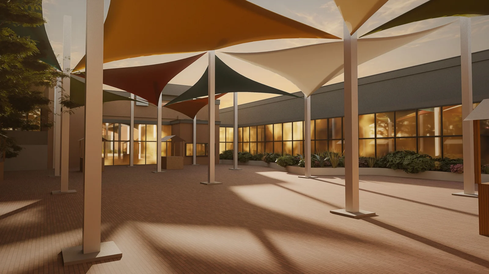
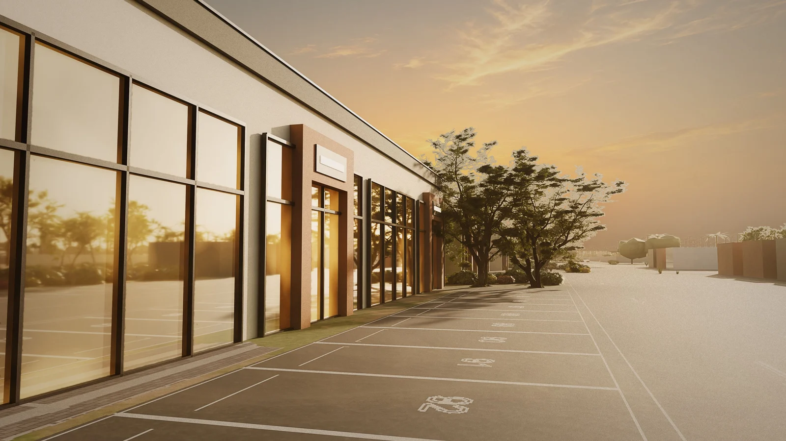
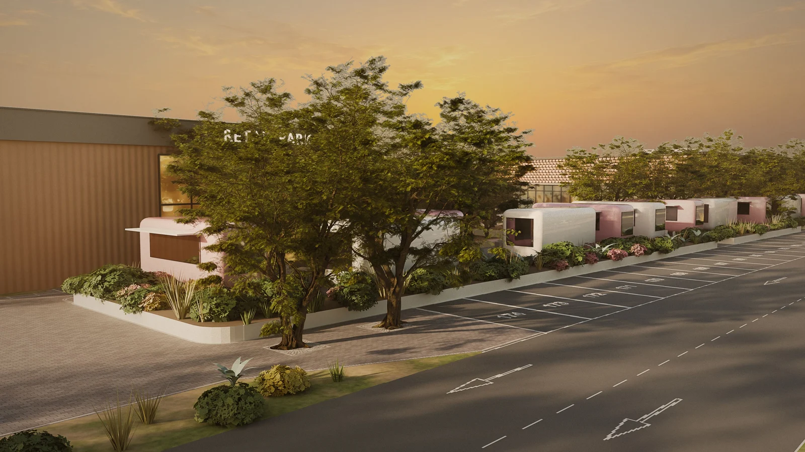
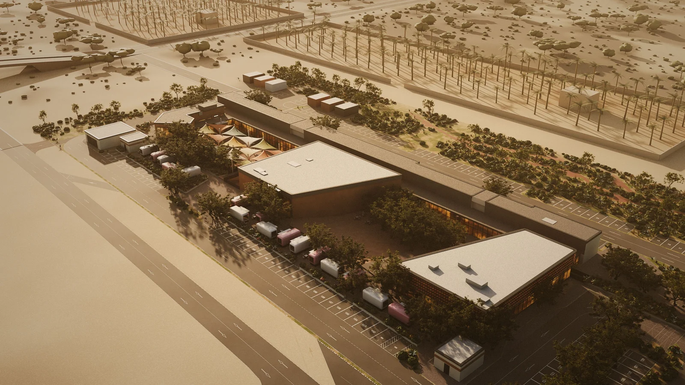
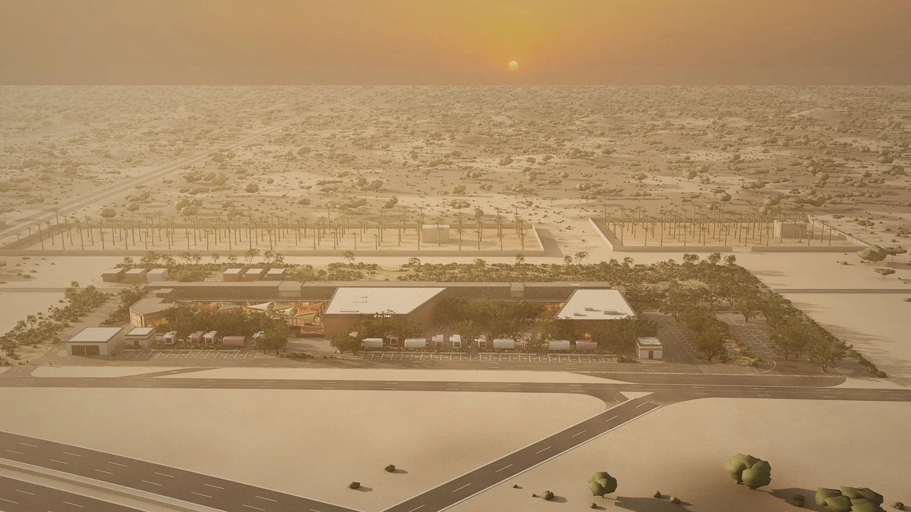
Process
Behind the render
Blender for the model, the materials and the light. Photoshop for the render elements and the grade.
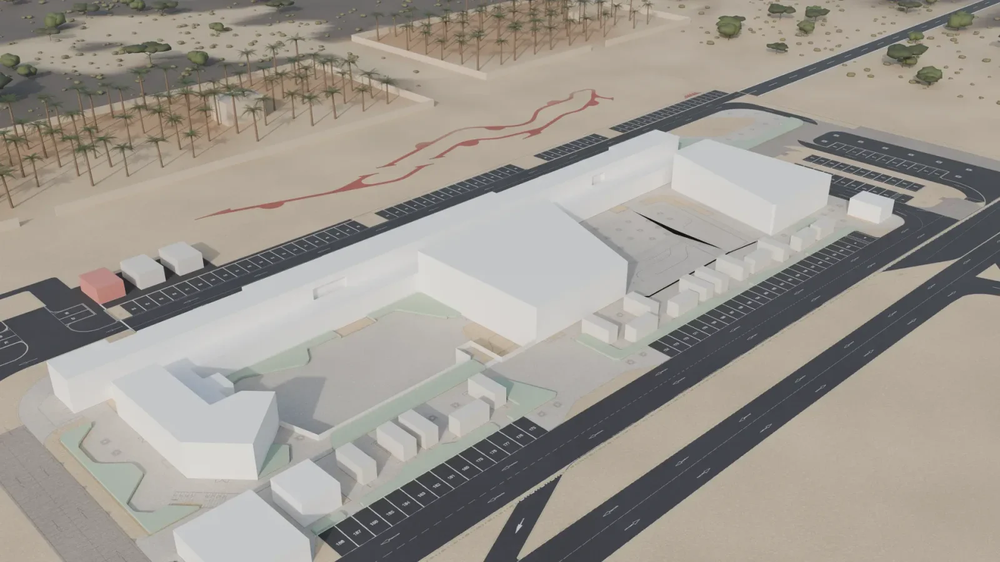
01Blender
The model, from the drawings
Footprints traced from the site setting-out plan, heights from the sections. The Games hall is 35.8 by 30.9 metres, and 9.15 metres from the sunken court to the parapet.
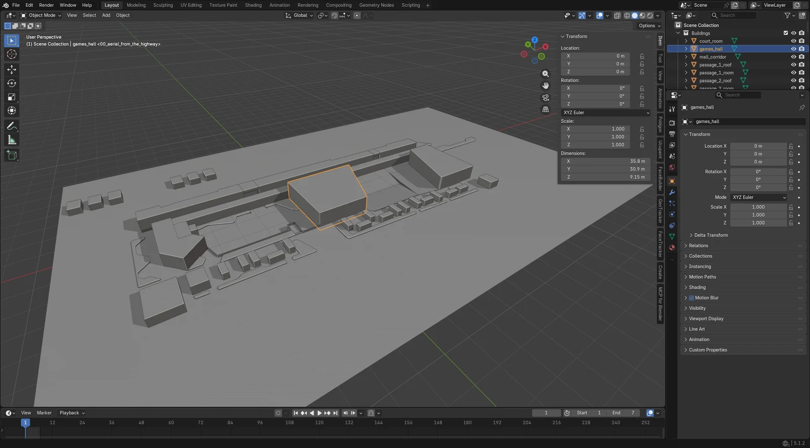
02Blender
Materials, light and the render
Every finish in the material schedule is a shader node tree, like the Games hall’s fluted paint with a flute every 0.3 metres. Photoscanned trees, a low sun from the west-north-west, and Cycles at 4K on the graphics card.
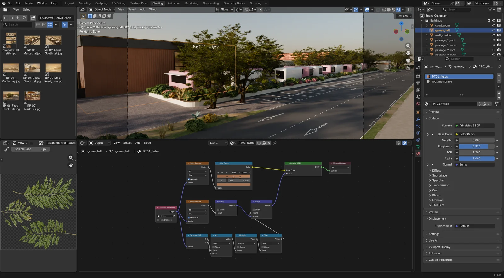
03Blender
Render passes
Each still renders with its passes split out: lighting, bounce light, reflections, self-illumination, ambient occlusion, depth and material ID masks, each denoised and saved as its own file for Photoshop.
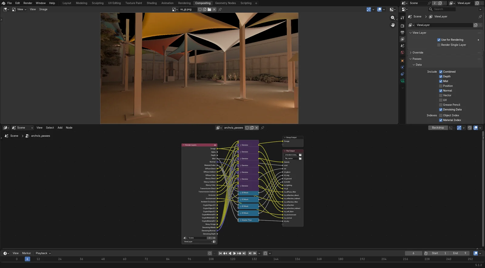
04Photoshop
Render elements and one shared grade
Ambient occlusion, bounce light, reflections and self-illumination sit over the beauty pass, masked by ID passes, with haze from the depth pass. The sky and the blowing dust are generated plates. The same golden-hour grade finishes every still.
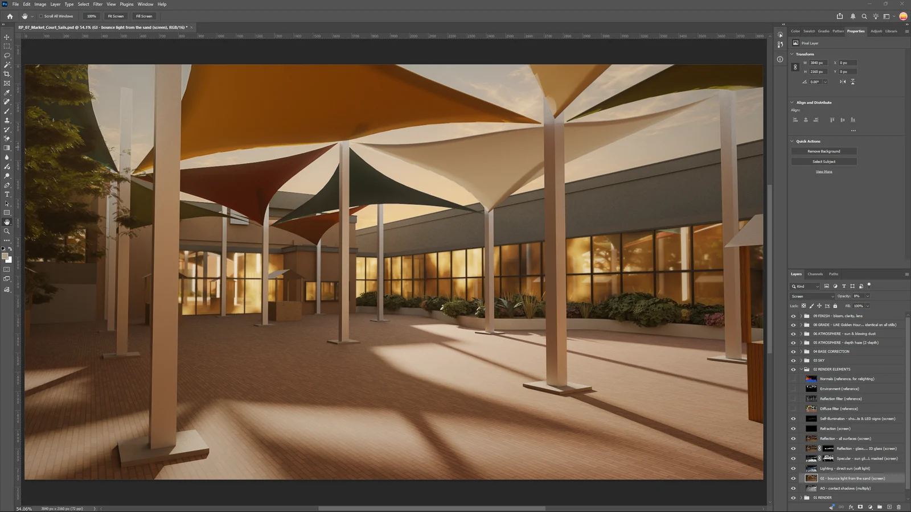